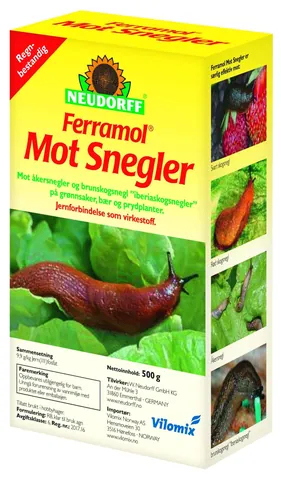
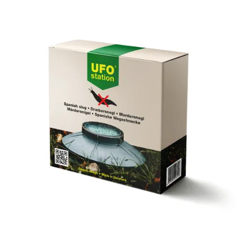
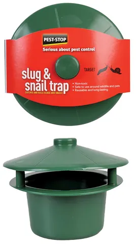
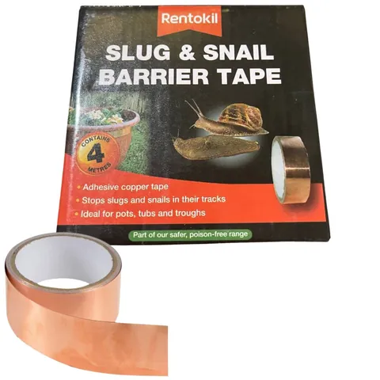
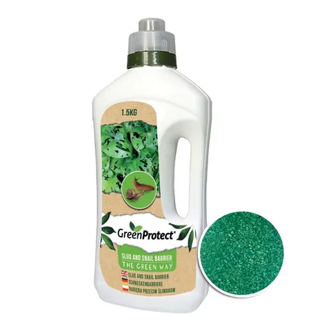

Brunskogsneglen ble registrert i Norge første gang i 1988 og er nå registrert i nesten halvparten av landets kommuner. Den er vanlig langs kysten fra svenskegrensen til Troms, med spredte forekomster i innlandet. Den spiser nesten alt, formerer seg raskt og regnes som en invaderende art med svært høy risiko. Du blir neppe helt kvitt den, men du kan holde bestanden nede – hvis du gjør tiltakene til riktig tid.
Kjenn igjen brunskogsneglen
Brunskogsneglen har ikke skall og blir 7–15 centimeter lang som voksen. Den er ensfarget, og fargen varierer fra lyst oransje til mørk rødbrun. Den ligner flere andre snegler, blant annet den stedegne svartskogsneglen. Masseforekomster av store, brune snegler er likevel trolig brunskogsnegl. Snegler med hus på ryggen gjør mer nytte enn skade og bør få være i fred.
Brunskogsneglen ble lenge kalt iberiaskogsnegl og «mordersnegl», før forskerne i 2011 fant ut at det var en annen art. Mange sier bare brunsnegl.
Sneglens år
- Vår: Når temperaturen stiger over rundt fem grader, blir de små sneglene som har overvintret, aktive og vokser raskt.
- Sommer: I løpet av sommeren blir de utvokst og kjønnsmodne. Sneglen er tvekjønnet, og to snegler befrukter hverandre.
- August–september: Egglegging. Eggene legges i grupper på 20–50, fra begynnelsen av august til slutten av september.
- Høst: De fleste eggene klekker i september–oktober, noen først neste vår. De voksne dør som regel etter eggleggingen. Små snegler overvintrer i jordhuler, steinhauger og komposthauger.
Tiltak gjennom sesongen
Vår og forsommer: plukk de små
- Plukk snegler så snart du ser dem, gjerne om kvelden eller etter regn, når de er mest aktive. Bruk hansker, pølseklype eller spade.
- Bearbeid bedene i tørt vær, så de små sneglene og eggene tørker ut.
- Legg ut planker, bøtter eller fuktige sekker som skjul, og sjekk under dem hver morgen.
Sommer: ta de store før de legger egg
- Fortsett å plukke jevnlig. Juli og tidlig august er siste sjanse før eggleggingen.
- Klipp plenen ofte, så jorda holder seg tørrere.
- Rydd hageavfall og fuktige, skyggefulle gjemmesteder langs gjerder og hekker.
Høst: eggjakt
- Let etter eggklaser under steiner, planker, potter og i løs jord. De er små, hvite hauger med kulerunde, melkehvite egg.
- Fjern eggene og la dem tørke ut, eller kast dem i restavfallet.
Slik avliver du sneglene
Kommunene anbefaler blant annet å klippe sneglene i to rett bak hodet, fryse dem, legge dem i saltlake eller helle kokende vann over dem. Døde snegler kan graves ned. Ikke legg levende brunsnegler i kompost eller hageavfall – da sprer du dem.
Sneglemidler og feller
Sneglemiddel med jernfosfat og sneglefeller kan være et supplement, særlig i grønnsakshagen og rundt planter sneglene er glade i. Bruk dem som en del av de andre tiltakene, ikke i stedet for. Sneglegjerder og kanter rundt bed kan beskytte de mest utsatte plantene.
Samarbeid med naboene
Det hjelper lite at bare én hage gjør tiltak. Snegler vandrer mellom hager, og egg i naboens kompost blir neste års snegler hos deg. Mange velforeninger og kommuner organiserer sneglekampanjer. Brunskogsneglen spres også med jord, planter og hageavfall, så sjekk det du tar med hjem, og ikke dump hageavfall i naturen.
Naturlige fiender
Padder, frosker, pinnsvin, enkelte fugler og løpebiller spiser egg og små snegler. En hage med litt variasjon, steinmurer og vannkant gir dem gode forhold. Nærmere råd får du hos NIBIO og i kommunen.
Riktig utstyr
Valgt for denne siden · kjøp hos Skadedyrbutikken




Vanlige spørsmål
Hvordan blir jeg kvitt brunsnegler?
Ingen enkelt metode er nok. Kombiner plukking tidlig i sesongen, eggjakt om høsten, fjerning av fuktige gjemmesteder og samarbeid med naboene. Jernfosfatbasert sneglemiddel og sneglefeller kan være et supplement.
Hvordan ser brunsnegl-egg ut?
Kulerunde, melkehvite egg i små hauger, gjerne under steiner, planker, bøtter og i løs jord. Hver snegl legger egg i grupper på 20–50, fra begynnelsen av august til slutten av september.
Når er det best å plukke brunsnegler?
Tidlig i sesongen, før de legger egg. Hver snegl kan legge opptil 400 egg, så hver snegl du tar i juni og juli betyr mye for neste års bestand. Plukk om kvelden og etter regn, når de er mest aktive.
Hvordan avliver jeg brunsnegl?
Kommunene anbefaler blant annet å klippe dem i to rett bak hodet, fryse dem, legge dem i saltlake eller helle kokende vann over dem.
Er alle store snegler i hagen brunsnegl?
Nei. Den stedegne svartskogsneglen og flere andre snegler forveksles med brunskogsnegl. Snegler med hus på ryggen gjør mer nytte enn skade og bør få være i fred. Masseforekomster av store, brune snegler er likevel trolig brunskogsnegl.
Kilder
- Store norske leksikon: Brunskogsnegl
- Bergen kommune / NIBIO: Brunskogsnegl (brosjyre)
- Bergen kommune: Slik bekjemper du brunsneglen
- Bærum kommune: Tiltak mot brunsnegle
- Midt-Telemark kommune: Brunsneglekampanje
- Handlingsplan for bekjempelse av iberiaskogsnegl (regjeringen.no)
Artikkelen er skrevet av redaksjonen i Kryp.as og bygger på kildene over. Den erstatter ikke råd fra lege, veterinær eller fagperson.